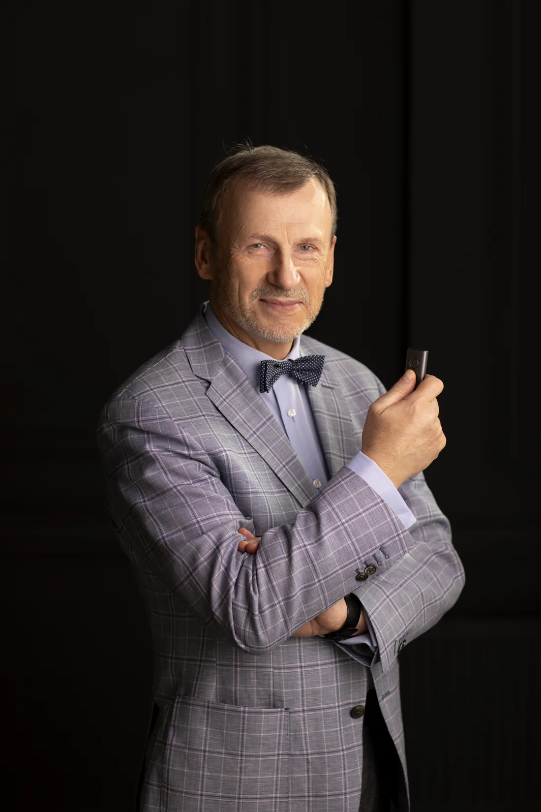
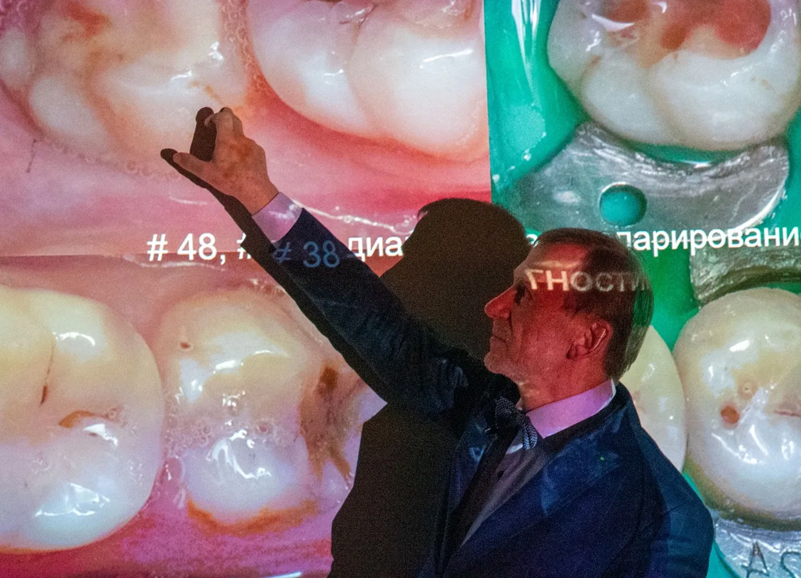

Художня реставрація зубів
Оновлений онлайн-курс Сергія Радлінського: 60 годин лекцій і покрокових майстер-класів, 30 балів БПР, доступ до кінця 2027 року.

Курс для лікаря, який робить прямі реставрації й хоче передбачуваний результат
Вам сюди, якщо ви
- щодня працюєте з композитом і хочете, щоб контактний пункт, форма й колір виходили за алгоритмом, а не на око;
- хочете брати складніші випадки: стирання, реконструкцію фронтального секстанту, діастеми й треми, і бути впевненим у плані;
- вчилися в «Аполлонії» очно й хочете мати систему під рукою, разом із новими лекціями 2026 року;
- потребуєте 30 балів БПР без відрядження, з користю для щоденної практики.
Курс не підійде, якщо ви
- шукаєте одну «фішку» на вечір, а не послідовну систему на 60 годин;
- не працюєте з прямою реставрацією і не плануєте;
- очікуєте, що відео замінить практику руками: курс дає алгоритм, руки тренуються в кабінеті.
Чотири нові лекції — 25 годин, майже половина курсу
Записані у 2026 році. Попередню програму не замінено, а доповнено: ви отримуєте і базову систему, і нові розбори.
Відновлення коронки переднього зуба на корені
Відновлення коронки верхнього першого моляра на корені
Художня реставрація верхніх зубів від ікла до ікла
Художня реставрація нижніх зубів від ікла до ікла
Що всередині: 26 лекцій і майстер-класів
Відкрийте будь-який блок, щоб побачити повний зміст і тривалість. Усе доступно одразу після оплати, у будь-якому порядку.
Лекторії
- Відновлення коронки переднього зуба на корені
- Відновлення коронки верхнього першого моляра на корені
- Художня реставрація верхніх зубів від ікла до ікла
- Художня реставрація нижніх зубів від ікла до ікла
- Заміна парадигми Блека на парадигму адгезивної реставрації
- Пряма реставрація зубів у вільному дизайні
- Три рівня прямої реставрації — три підстави систематизації
- Параметри видів прямої реставрації
- Хто та де відновлює зуби і з якою оплатою
- Загальні правила адгезивної техніки відновлення зубів
- Особливості пломбування зубів у п'яти класах за Блеком
- Нові види пломбування: тонельне, щілиноподібне і герметизуюче
- Фінішна обробка відновлених зубів
- Гарантії, термін служби, прогноз і моніторинг
- Біомеханіка зубів і реставрацій
- Циклічні оклюзійні навантаження і механічна втома
- Конструкція реставрованого зуба
- Прямі вініри, коронки, штучні зуби і адгезивні мости
- Конкуренція між прямою і непрямою реставраціями
- Колір зубів і реставрацій — фізичні основи
- Біоміметичний підхід для досягнення кольору реставрацій
- Реконструкція зубів і зубних рядів
- Трансформація зубів
- Клас VI за Блеком — усунення стирання зубів
- Стоматологічне здоров'я як місія стоматолога
- Конструкція реставрованого зуба як триєдиний комплекс
- Парадигма Блека — квінтесенція доадгезивної стоматології
- Парадигма адгезивної стоматології — що тепер можна?
- Систематизація видів прямої реставрації зубів
- Препарування зубних тканин у вільному дизайні
- Оцінка реставрації після завершення і в динаміці
- Заміна парадигми Блека на парадигму адгезивної реставрації
- Нові види діагностики і препарування зубів, оптичне збільшення
- Біомеханіка зубів і реставрацій, матеріали-імітатори зубних тканин
- Конструкція реставрованого зуба, алгоритми побудови реставрації
- Техніка роботи композитами, контроль над склеюванням
- Моделювання контактних поверхонь, інтеграція в оклюзії
- Причини і симптомокомплекс стертих зубів
- Авторський алгоритм системного відновлення зубів
- Статус 3-х пацієнтів з патологічним стиранням зубів
- Відновлення верхніх іклів
- Відновлення верхніх бічних зубів
- Відновлення верхніх передніх зубів
- Оклюзія на етапах відновлення верхніх зубів
- Причини і симптомокомплекс стертих зубів
- Авторський алгоритм системного відновлення зубів
- Статус 3-х пацієнтів з патологічним стиранням зубів
- Відновлення нижніх бічних зубів
- Відновлення нижніх іклів
- Відновлення нижніх передніх зубів
- Оклюзія на етапах відновлення нижніх зубів
- Моніторинг реставрованих зубів і оклюзії
- Реконструкція в системі видів прямої реставрації зубів
- Пряма і непряма техніки реконструкції
- Види і техніка реконструкції зубів і зубних рядів
- Золота пропорція в естетичній стоматології
- Стандартні розміри коронок зубів
- Авторський розрахунок фронтальних секстантів зубних рядів
- Інструменти контролю і орієнтації
- Експозиція фронтального секстанту верхнього зубного ряду
- Експозиція і розрахунок фронтального секстанту
- Функції і анатомічні особливості верхніх іклів
- Препарування зубних тканин
- Алгоритм відновлення іклів
- Ізоляція робочого поля і адгезивна підготовка
- Відновлення дентину та емалі
- Фінішна обробка поверхні композиту
- Контроль над формою і розміром іклів
- Функції і анатомічні особливості верхніх латеральних різців
- Препарування зубних тканин
- Алгоритм відновлення різців аномалійної форми
- Ізоляція робочого поля і адгезивна підготовка
- Відновлення дентину та емалі
- Фінішна обробка поверхні композиту
- Контроль над формою і розміром латеральних різців
- Функції і анатомічні особливості верхніх центральних різців
- Препарування зубних тканин під реконструкцію
- Алгоритм відновлення центральних різців у повороті
- Ізоляція робочого поля і адгезивна підготовка
- Відновлення коронок в основному
- Відновлення контактних поверхонь
- Фінішна обробка поверхні композиту
- Контроль над формою і розміром центральних різців
- Демонстрація реконструкції верхнього переднього секстанту, завершеної протягом майстер-класу на фантомі
- Реконструкція фронтальних секстантів за розрахунком
- Усунення скупченості передніх зубів
- Закриття діастеми і трем
- Реконструкція верхніх передніх зубів
- Реконструкція нижніх передніх зубів
- Моніторинг реконструйованих зубів, гарантії і термін служби
Поглиблений розбір оклюзійних особливостей перших молярів — ключових зубів жувального апарату. Алгоритм відтворення горбиків, фісур та інтеграції в оклюзії.
Біомеханічні принципи побудови реставрації, що працюють під циклічним оклюзійним навантаженням. Відмінності протоколу для вітальних і девітальних зубів.
Практичні майстер-класи
Авторський протокол формування ідеального контактного пункту на фронтальних зубах. Поетапна демонстрація на фантомі — від ізоляції до фінішної обробки.
Поетапна демонстрація закриття діастеми за авторським розрахунком фронтального секстанту. Робота з пропорціями, контактними поверхнями та контролем форми.
Майстер-клас з препарування у вільному дизайні: моделювання горбиків, фісур та контактних поверхонь бічних зубів з інтеграцією в оклюзії.
Авторський протокол формування контактного пункту на бічних зубах. Демонстрація на фантомі — інструменти, послідовність шарів, контроль над оклюзією.
- Майстер-клас «Реставрація зруйнованих передніх зубів — покроковий алгоритм»
- Майстер-клас на пацієнті «Вільний дизайн в реставрації верхніх центральних різців»
- Майстер-клас «Реставрація верхніх ікол»
- Майстер-клас «Закриття трем за розрахунком фронтального секстанта верхнього зубного ряду»
- Майстер-клас на фантомі «Реставрація передніх нижніх зубів»
- Майстер-клас на пацієнті «Реставрація зруйнованих передніх зубів»
- Майстер-клас на пацієнті «Реставрація зруйнованих бокових зубів»

Повні демонстрації, без вирізаних етапів
- Майстер-класи на фантомі й на пацієнті зняті від ізоляції робочого поля до фінішної обробки: видно кожен шар і кожен інструмент.
- Відео відкриваються в особистому кабінеті на сайті з комп’ютера, планшета чи телефона.
- Можна зупинити, повернутися й переглянути потрібний епізод перед прийомом. Доступ діє до 31 грудня 2027 року.
- Лекції 1–2 години, майстер-класи 1–2,5 години: один майстер-клас на тиждень — і за пів року курс пройдено.
Що кажуть лікарі після курсів «Аполлонії»
Відгуки з особистих повідомлень учасників, наведені дослівно.
«Я не перший рік у стоматології і з кожним роком покращую свої навички моделювання. Проходжу онлайн і офлайн курси. Все йшло добре, але були нюанси: чогось не вистачало, щоб контакт був випуклий, гладенький і щоб я була задоволена своєю роботою. І ось нарешті цей вебінар Сергія Радлінського — просто благословіння для моїх робіт. Тепер флос у міжзубному просторі каже мені «дякую», а не рветься при одному погляді на мене. Безмежно вдячна, щаслива і до зустрічі на живих курсах!»
Лікар-стоматолог, учасниця онлайн-вебінару Сергія Радлінського«Щиро дякуємо вам за курси та всій команді за організацію та високопрофесійне проведення курсів з художньої та прямої реставрації зубів і онлайн-курсів. Отримані знання, практичні навички та сучасні підходи до реставрації є надзвичайно цінними та корисними для щоденної роботи. Завдяки вашій роботі та професіоналізму навчання відбулося на високому рівні!»
Лікар-стоматолог, учасник очних і онлайн-курсів «Аполлонії»лікарів навчалися на онлайн-курсах «Аполлонії» за весь час.
Понад 30 років клінічної практики автора, журнал «ДентАрт», підручник і понад 60 статей з реставраційної стоматології.
балів БПР і сертифікат
- Після курсу ви отримуєте сертифікат і 30 балів безперервного професійного розвитку.
- Оплата до 31 грудня 2026 року — сертифікат за 2026 рік: бали йдуть у звіт цього року.
- Доступ до матеріалів зберігається до 31 грудня 2027 року, тож дивитися можна у зручному темпі.
Повний курс у вашому доступі
- 26 лекцій і практичних майстер-класів — 60 годин відео, зокрема 4 нові лекції 2026 року (25 годин).
- Покрокові демонстрації на фантомі й на пацієнті.
- Доступ із комп’ютера, планшета чи телефона до 31 грудня 2027 року.
- Сертифікат і 30 балів БПР.
Повна вартість курсу — 8 000 грн. Акційна ціна 3 890 грн діє до 30 листопада 2026 року включно, з 1 грудня ціна зміниться.
Повна вартість курсу — 8 000 грн. Ціна 4 990 грн діє до 31 грудня 2026 року для тих, кому потрібні бали за 2026 рік. З 1 січня 2027 року — 8 000 грн.
Що запитують найчастіше
Це разова акція до запуску оновленої програми у форматі «Чорної п’ятниці» з чіткими датами: 10–30 листопада. Зміст курсу той самий, що й за повною ціною. З 1 грудня ціна зміниться.
У програмі 2026 року чотири нові лекції Сергія Радлінського — близько 25 годин матеріалу, майже половина курсу: відновлення коронки переднього зуба і верхнього першого моляра на корені, художня реставрація верхніх і нижніх зубів від ікла до ікла. Попередні матеріали не замінено, а доповнено.
Руки тренуються в кабінеті, і жоден курс цього не замінить. Курс дає те, чого рукам бракує: алгоритм і послідовність. Майстер-класи на фантомі й на пацієнті зняті повністю, видно кожен шар і кожен інструмент. Переглянули фрагмент зранку — повторили на прийомі.
Доступ діє до 31 грудня 2027 року. Лекції тривають 1–2 години, майстер-класи 1–2,5 години. Один майстер-клас на тиждень — і за пів року курс пройдено. Починати можна з того, що потрібно завтра.
Так. Після курсу ви отримуєте сертифікат і 30 балів безперервного професійного розвитку. Якщо оплата до 31 грудня 2026 року — сертифікат за 2026 рік.
Фрагменти є, системи немає. Тут — послідовна програма від біомеханіки й препарування до полірування, з повними демонстраціями без вирізаних етапів, від автора методики. І з 30 балами БПР, яких YouTube не дає.
Доступ відкривається одразу після оплати в особистому кабінеті на сайті. Дивитися можна з комп’ютера, планшета чи телефона, у будь-який час до 31 грудня 2027 року.
Оплата карткою будь-якого банку через WayForPay. Якщо вам потрібна оплата частинами, напишіть нам у Telegram, Viber або на пошту — підкажемо доступні варіанти.
Очний курс — це робота руками під наглядом, обмежена група й поїздка. Онлайн — уся теорія й демонстрації у вашому темпі, з 30 балами БПР. Найкраща послідовність: спочатку онлайн, потім очний — тоді день у клініці йде на руки, а не на теорію.
Умови повернення описані в політиці на сайті. До оплати ви бачите повну програму з тривалістю кожної лекції, тож купуєте не навмання.